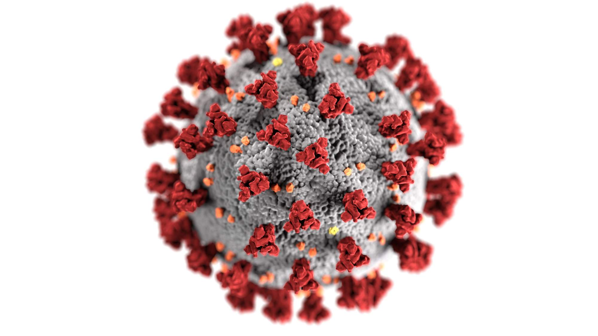

1.Covid 19
The pandemic has altered people’s lives in both enormous and small ways. Our editors have picked the top recent blogs that dig into the details of what COVID-19 means for people: the impact on women and the young, what it means for the food supply, and how it can increase already growing inequality, to name a few. COVID-19 is a stark reminder of longstanding inequities in our societies, and how policies need to pay specific attention to protect and lift the least advantaged in society.
2.Peace
Peace is a concept of societal friendship and harmony in the absence of hostility and violence. In a social sense, peace is commonly used to mean a lack of conflict (such as war) and freedom from fear of violence between individuals or groups. Throughout history, leaders have used peacemaking and diplomacy to establish a type of behavioral restraint that has resulted in the establishment of regional peace or economic growth through various forms of agreements or peace treaties.
3.Football

Football is a family of team sports that involve, to varying degrees, kicking a ball to score a goal. Unqualified, the word football normally means the form of football that is the most popular where the word is used. Sports commonly called football include association football (known as soccer in North America and Oceania); gridiron football (specifically American football or Canadian football); Australian rules football; rugby union and rugby league; and Gaelic football.It is a lot of fans around the world.
4.Programming

Programming is the process of creating a set of instructions that tell a computer how to perform a task. Programming can be done using a variety of computer programming languages, such as JavaScript, Python, and C++. Created by Pamela Fox. programming is the process of designing and building an executable computer program to accomplish a specific computing result or to perform a particular task. Programming involves tasks such as analysis, generating algorithms, profiling algorithms.